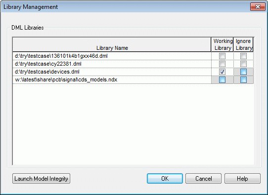

You need to specify the libraries containing the DML or IBIS models to be able to assign these models to the parts in your design. You also need to specify a working library. Capture writes the assigned models to a device DML file in the working library. You can use the Library Setup dialog box to add libraries, change priority of added libraries by changing the sequential order, and remove libraries. You can also launch the Library Management utility to specify working libraries and to ignore libraries. You will not be able to assign models from the ignored libraries.
You can launch the Model Integrity tool that helps you ensure the integrity of the model data required for high-speed circuit simulations and allows you to create, manipulate, and validate models quickly in an easy-to-use editing environment. For more information on Model Integrity, refer Model Integrity User Guide.
To set up library, choose SI Analysis –SI Library Setup to launch the Library Setup (SI Analysis) dialog Box.

In the Library Setup (SI Analysis) dialog box, click the Add a new library () button to add a library to list. You can also move the libraries up () or down () in the list, or delete () a library.
You can click the Launch Library Management button ( ) to launch the Library Management dialog box.

In the Library Management dialog box, you can select the Working Library field for any one of the libraries to specify it as your working library. Similarly, you can select the Ignore Library field for one or more listed libraries to ignore them. You can also launch Model Integrity by clicking Launch Model Integrity.
|
|
You can also launch Model Integrity by choosing SI Analysis – SI Model Integrity. |